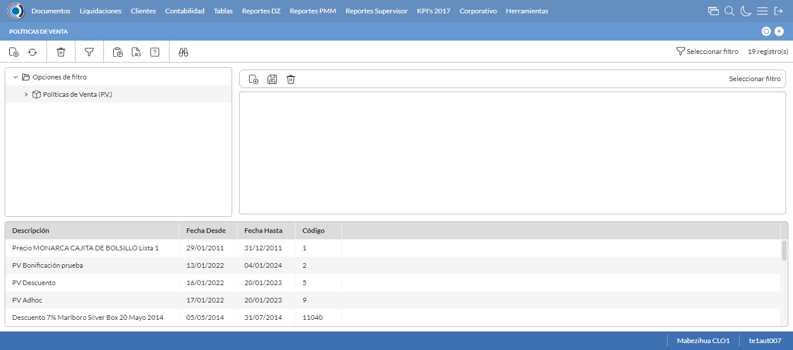
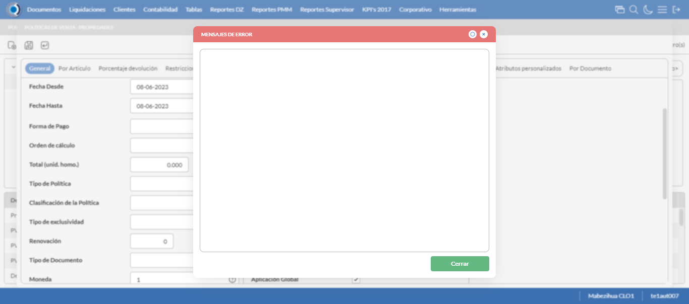

Desarrollado por : Area de Testing PWST
Fecha y hora de inicio : 2023-06-08 14:54:08
Duracion : 0:01:34.165488
Resultado : Total 8，Correctos 6 ，Errores 2 ，Taza de resultado 75.00%
Resumen 75.00% Errores 2 Fallidos 0 Correctos 6 Test realizados 8
| Caso de Prueba | Total | Correctos | Fallido | Error | Detalles | Captura del error |
| PoliticasVenta2.Test: Escenario 1 de Autorizaciones de Credito | 8 | 6 | 0 | 2 | Detalles | |
test |
pt1_1: 2023-06-08 14:54:09,951 - root - INFO - Se abre el chrome
2023-06-08 14:54:11,668 - root - INFO - Entra a la URL
2023-06-08 14:54:11,786 - root - INFO - Maximiza la pantalla
|
|
||||
test_000: Ingresa a la base de datos |
pt1_2: 2023-06-08 14:54:14,859 - root - INFO - Escribe el usuario
2023-06-08 14:54:14,946 - root - INFO - Escribe la contraseña
2023-06-08 14:54:15,020 - root - INFO - Se dio clic en el boton ingresar
2023-06-08 14:54:15,701 - root - INFO - Ejecutar Enterprise
2023-06-08 14:54:19,752 - root - INFO - Cambia entre pestañas
|
|
||||
test_001: Abre menu y ejecuta pantalla |
pt1_3: 2023-06-08 14:54:30,967 - root - INFO - Abre la pantalla de Politicas de Venta
2023-06-08 14:54:31,515 - root - INFO - La pantalla ejecutada es Politicas de Venta
2023-06-08 14:54:31,516 - root - INFO - Captura: C:\xampp\htdocs\versiones\automatizaciones\AutoPWST\02PV\report\img screen：20230608_14_54_31.png
2023-06-08 14:54:41,931 - root - INFO - Se presiona el boton 'Nuevo', para crear un nuevo registro.
|
 | ||||
test_002: Abre la ventana de nuevo y crear un registro |
pt1_4: 2023-06-08 14:54:42,472 - root - INFO - Se abrio la pantalla para el ingreso de un registro nuevo.
2023-06-08 14:54:42,500 - root - INFO - El campo 'Codigo' si se encuentra visible.
2023-06-08 14:54:42,524 - root - INFO - El campo 'Codigo Alternativo' si se encuentra visible.
2023-06-08 14:54:42,547 - root - INFO - El campo 'Descrición' si se encuentra visible.
2023-06-08 14:54:42,598 - root - INFO - El campo 'Moneda' si se encuentra visible.
2023-06-08 14:54:42,621 - root - INFO - El campo 'Aplicable en' si se encuentra visible.
2023-06-08 14:54:42,648 - root - INFO - El campo 'Activa' si se encuentra visible.
2023-06-08 14:54:42,674 - root - INFO - El campo 'Aplicación Global' si se encuentra visible.
2023-06-08 14:54:42,734 - root - INFO - Ingresa el codigo del nuevo registro
2023-06-08 14:54:42,825 - root - INFO - Ingresa el codigo alternativo del nuevo registro
2023-06-08 14:54:42,997 - root - INFO - Ingresa la descripción del nuevo registro
2023-06-08 14:54:43,890 - root - INFO - Se dió doble click en el registro de Moneda.
2023-06-08 14:54:44,360 - root - INFO - Se dió click en la opción BackOffice y Mobile.
2023-06-08 14:54:44,412 - root - INFO - Se dió click en el checkbox Activa.
2023-06-08 14:54:44,463 - root - INFO - Se dió click en el checkbox Aplicación Global.
2023-06-08 14:54:44,518 - root - INFO - Se hace el cambio a la pestaña Por Articulo para continuar con el registro nuevo
2023-06-08 14:54:45,100 - root - INFO - Se presiona el boton 'Nuevo', para crear un nuevo registro de Por Articulo.
2023-06-08 14:54:45,647 - root - INFO - El campo 'Artículo' si se encuentra visible.
2023-06-08 14:54:45,670 - root - INFO - El campo 'Grupo Política a Bonificar' si se encuentra visible.
2023-06-08 14:54:45,737 - root - INFO - El campo 'Cantidad a Bonificar(Packing)' si se encuentra visible.
2023-06-08 14:54:45,760 - root - INFO - El campo 'Cantidad en Bonificación(Unidad)' si se encuentra visible.
2023-06-08 14:54:45,781 - root - INFO - El campo 'Tope Descuento 1' si se encuentra visible.
2023-06-08 14:54:45,803 - root - INFO - El campo 'Tope Descuento 2' si se encuentra visible.
2023-06-08 14:54:45,888 - root - INFO - Ingresa el Articulo del nuevo registro
2023-06-08 14:54:45,967 - root - INFO - Ingresa el Grupo a bonificar del nuevo registro
2023-06-08 14:54:46,036 - root - INFO - Ingresa la Cantidad a Bonificar del nuevo registro
2023-06-08 14:54:46,125 - root - INFO - Ingresa la Cantidad en Bonificación del nuevo registro
2023-06-08 14:54:46,198 - root - INFO - Ingresa el Tope Descuento 1 del nuevo registro
2023-06-08 14:54:46,351 - root - INFO - Ingresa el Tope Descuento 2 del nuevo registro
2023-06-08 14:54:46,416 - root - INFO - Se presiona el boton 'Guardar', para guardar el registro de Por Articulo.
2023-06-08 14:54:46,592 - root - INFO - Se da clic en el boton Guardar; se debe crear un nuevo registro.
|
|
||||
test_003: Repetir el registro creado anteriormente |
pt1_5: 2023-06-08 14:54:47,095 - root - INFO - Se presiona el boton 'Refrescar', para crear un nuevo registro igual al anterior.
2023-06-08 14:54:49,147 - root - INFO - Se presiona el boton 'Nuevo', para crear un nuevo registro igual al anterior.
2023-06-08 14:54:49,693 - root - INFO - Se abrio la pantalla para el ingreso de un registro nuevo.
2023-06-08 14:54:49,761 - root - INFO - Ingresa el codigo del nuevo registro
2023-06-08 14:54:49,859 - root - INFO - Ingresa el codigo alternativo del nuevo registro
2023-06-08 14:54:49,999 - root - INFO - Ingresa la descripción del nuevo registro
2023-06-08 14:54:50,880 - root - INFO - Se dió doble click en el registro de Moneda.
2023-06-08 14:54:51,375 - root - INFO - Se dió click en la opción BackOffice y Mobile.
2023-06-08 14:54:51,427 - root - INFO - Se dió click en el checkbox Activa.
2023-06-08 14:54:51,467 - root - INFO - Se dió click en el checkbox Aplicación Global.
2023-06-08 14:54:51,508 - root - INFO - Se da clic en el boton Guardar; NO se debe crear un nuevo registro.
2023-06-08 14:54:52,509 - root - INFO - Captura: C:\xampp\htdocs\versiones\automatizaciones\AutoPWST\02PV\report\img screen：20230608_14_54_52.png
2023-06-08 14:54:57,993 - root - INFO - Se presiona el boton 'Cerrar', para cerrar el mensaje de duplicidad de llave primaria
2023-06-08 14:54:58,995 - root - INFO - Captura: C:\xampp\htdocs\versiones\automatizaciones\AutoPWST\02PV\report\img screen：20230608_14_54_58.png
2023-06-08 14:54:59,203 - root - INFO - Se presiona el boton 'Cerrar', para cerrar el mensaje de duplicidad de llave primaria
2023-06-08 14:54:59,293 - root - INFO - Se presiona el boton 'Cerrar', para cerrar la ventana
|
 | ||||
test_004: Modificar el registro |
pt1_6: 2023-06-08 14:54:59,423 - root - INFO - Se presiona el boton 'Refrescar', para proceder a modificar el registro.
2023-06-08 14:55:03,063 - root - INFO - Se da clic en el registro creado, para proceder a modificarlo.
2023-06-08 14:55:03,710 - root - INFO - Se modifica el contenido del campo Codigo Alternativo
2023-06-08 14:55:03,930 - root - INFO - Se modifica el contenido del campo Descripcion
2023-06-08 14:55:03,984 - root - INFO - Se dió click en el checkbox Aplicación Global.
2023-06-08 14:55:04,036 - root - INFO - Se hace el cambio a la pestaña Por Articulo para continuar con la modificación del registro
2023-06-08 14:55:05,148 - root - INFO - Se da clic en el registro de Por Articulo, para proceder a modificarlo.
2023-06-08 14:55:05,903 - root - INFO - Se modifica el contenido del campo Articulo
2023-06-08 14:55:05,996 - root - INFO - Se modifica el contenido del campo Grupo a Bonificar
2023-06-08 14:55:06,102 - root - INFO - Se modifica el contenido del campo Cantidad a Bonificar
2023-06-08 14:55:06,225 - root - INFO - Se modifica el contenido del campo Cantidad en Bonificación
2023-06-08 14:55:06,377 - root - INFO - Se presiona el boton 'Guardar', para guardar la modificación del registro de Por Articulo.
2023-06-08 14:55:06,649 - root - INFO - Se da clic en el boton Guardar; se debe modificar la informacion del registro.
|
|
||||
test_005: Eliminar el registro creado |
ft1_7: 2023-06-08 14:55:07,084 - root - INFO - Se presiona el boton 'Refrescar', para proceder a eliminar el registro.
2023-06-08 14:55:10,723 - root - INFO - Se da clic en el registro creado, para proceder a eliminarlo.
2023-06-08 14:55:11,311 - root - INFO - Se hace el cambio a la pestaña para continuar con la eliminación del registro
2023-06-08 14:55:42,249 - root - ERROR - No se encontró el registro de Por Articulo, rvalidar que la acción anterior haya finalizado, que el xpath sea el correcto o que la página no presente lentitud
2023-06-08 14:55:42,250 - root - INFO - Captura: C:\xampp\htdocs\versiones\automatizaciones\AutoPWST\02PV\report\img screen：20230608_14_55_42.png
Traceback (most recent call last):
File "C:\xampp\htdocs\versiones\automatizaciones\AutoPWST\02PV\testCase\eliminarregistro.py", line 71, in eliminarregistro
Registroporarticulo = self.wait.until(conditions.visibility((By.XPATH, "//span[text()='MARLBORO LS BOX 20 (FA01001)']")))
^^^^^^^^^^^^^^^^^^^^^^^^^^^^^^^^^^^^^^^^^^^^^^^^^^^^^^^^^^^^^^^^^^^^^^^^^^^^^^^^^^^^^^^^^^^^^^^^^^^
File "C:\Users\gerar\AppData\Local\Programs\Python\Python311\Lib\site-packages\selenium\webdriver\support\wait.py", line 86, in until
value = method(self._driver)
^^^^^^^^^^^^^^^^^^^^
File "C:\Users\gerar\AppData\Local\Programs\Python\Python311\Lib\site-packages\selenium\webdriver\support\expected_conditions.py", line 125, in _predicate
return _element_if_visible(driver.find_element(*locator))
^^^^^^^^^^^^^^^^^^^^^^^^^^^^^
File "C:\Users\gerar\AppData\Local\Programs\Python\Python311\Lib\site-packages\selenium\webdriver\remote\webdriver.py", line 861, in find_element
return self.execute(Command.FIND_ELEMENT, {"using": by, "value": value})["value"]
^^^^^^^^^^^^^^^^^^^^^^^^^^^^^^^^^^^^^^^^^^^^^^^^^^^^^^^^^^^^^^^^^
File "C:\Users\gerar\AppData\Local\Programs\Python\Python311\Lib\site-packages\selenium\webdriver\remote\webdriver.py", line 444, in execute
self.error_handler.check_response(response)
File "C:\Users\gerar\AppData\Local\Programs\Python\Python311\Lib\site-packages\selenium\webdriver\remote\errorhandler.py", line 249, in check_response
raise exception_class(message, screen, stacktrace)
selenium.common.exceptions.NoSuchWindowException: Message: no such window: target window already closed
from unknown error: web view not found
(Session info: chrome=114.0.5735.110)
Stacktrace:
Backtrace:
GetHandleVerifier [0x005FA813+48355]
(No symbol) [0x0058C4B1]
(No symbol) [0x00495358]
(No symbol) [0x0047D293]
(No symbol) [0x004DE37B]
(No symbol) [0x004EC473]
(No symbol) [0x004DA536]
(No symbol) [0x004B82DC]
(No symbol) [0x004B93DD]
GetHandleVerifier [0x0085AABD+2539405]
GetHandleVerifier [0x0089A78F+2800735]
GetHandleVerifier [0x0089456C+2775612]
GetHandleVerifier [0x006851E0+616112]
(No symbol) [0x00595F8C]
(No symbol) [0x00592328]
(No symbol) [0x0059240B]
(No symbol) [0x00584FF7]
BaseThreadInitThunk [0x773C7D59+25]
RtlInitializeExceptionChain [0x7784B74B+107]
RtlClearBits [0x7784B6CF+191]
During handling of the above exception, another exception occurred:
Traceback (most recent call last):
File "C:\xampp\htdocs\versiones\automatizaciones\AutoPWST\02PV\testCase\PoliticasVenta2.py", line 126, in test_005
success = eliminarregistro.eliminarregistro.eliminarregistro(self, conditions, Configuracion)
^^^^^^^^^^^^^^^^^^^^^^^^^^^^^^^^^^^^^^^^^^^^^^^^^^^^^^^^^^^^^^^^^^^^^^^^^^^^^^^^^^^
File "C:\xampp\htdocs\versiones\automatizaciones\AutoPWST\02PV\testCase\eliminarregistro.py", line 88, in eliminarregistro
self.driver.get_screenshot_as_file(img_name)
File "C:\Users\gerar\AppData\Local\Programs\Python\Python311\Lib\site-packages\selenium\webdriver\remote\webdriver.py", line 929, in get_screenshot_as_file
png = self.get_screenshot_as_png()
^^^^^^^^^^^^^^^^^^^^^^^^^^^^
File "C:\Users\gerar\AppData\Local\Programs\Python\Python311\Lib\site-packages\selenium\webdriver\remote\webdriver.py", line 965, in get_screenshot_as_png
return b64decode(self.get_screenshot_as_base64().encode("ascii"))
^^^^^^^^^^^^^^^^^^^^^^^^^^^^^^^
File "C:\Users\gerar\AppData\Local\Programs\Python\Python311\Lib\site-packages\selenium\webdriver\remote\webdriver.py", line 977, in get_screenshot_as_base64
return self.execute(Command.SCREENSHOT)["value"]
^^^^^^^^^^^^^^^^^^^^^^^^^^^^^^^^
File "C:\Users\gerar\AppData\Local\Programs\Python\Python311\Lib\site-packages\selenium\webdriver\remote\webdriver.py", line 444, in execute
self.error_handler.check_response(response)
File "C:\Users\gerar\AppData\Local\Programs\Python\Python311\Lib\site-packages\selenium\webdriver\remote\errorhandler.py", line 249, in check_response
raise exception_class(message, screen, stacktrace)
selenium.common.exceptions.NoSuchWindowException: Message: no such window: target window already closed
from unknown error: web view not found
(Session info: chrome=114.0.5735.110)
Stacktrace:
Backtrace:
GetHandleVerifier [0x005FA813+48355]
(No symbol) [0x0058C4B1]
(No symbol) [0x00495358]
(No symbol) [0x0047D293]
(No symbol) [0x004DE37B]
(No symbol) [0x004EC473]
(No symbol) [0x004DA536]
(No symbol) [0x004B82DC]
(No symbol) [0x004B93DD]
GetHandleVerifier [0x0085AABD+2539405]
GetHandleVerifier [0x0089A78F+2800735]
GetHandleVerifier [0x0089456C+2775612]
GetHandleVerifier [0x006851E0+616112]
(No symbol) [0x00595F8C]
(No symbol) [0x00592328]
(No symbol) [0x0059240B]
(No symbol) [0x00584FF7]
BaseThreadInitThunk [0x773C7D59+25]
RtlInitializeExceptionChain [0x7784B74B+107]
RtlClearBits [0x7784B6CF+191]
|

|
||||
test_006: Cerrar_Navegador |
ft1_8: Traceback (most recent call last):
File "C:\xampp\htdocs\versiones\automatizaciones\AutoPWST\02PV\testCase\PoliticasVenta2.py", line 144, in test_006
self.driver.close()
File "C:\Users\gerar\AppData\Local\Programs\Python\Python311\Lib\site-packages\selenium\webdriver\remote\webdriver.py", line 561, in close
self.execute(Command.CLOSE)
File "C:\Users\gerar\AppData\Local\Programs\Python\Python311\Lib\site-packages\selenium\webdriver\remote\webdriver.py", line 444, in execute
self.error_handler.check_response(response)
File "C:\Users\gerar\AppData\Local\Programs\Python\Python311\Lib\site-packages\selenium\webdriver\remote\errorhandler.py", line 249, in check_response
raise exception_class(message, screen, stacktrace)
selenium.common.exceptions.WebDriverException: Message: disconnected: not connected to DevTools
(failed to check if window was closed: disconnected: not connected to DevTools)
(Session info: chrome=114.0.5735.110)
Stacktrace:
Backtrace:
GetHandleVerifier [0x005FA813+48355]
(No symbol) [0x0058C4B1]
(No symbol) [0x00495358]
(No symbol) [0x004870EB]
(No symbol) [0x004877AA]
(No symbol) [0x00487748]
(No symbol) [0x0047C2AA]
(No symbol) [0x0047CB1D]
(No symbol) [0x004E27B8]
(No symbol) [0x004DA703]
(No symbol) [0x004B82DC]
(No symbol) [0x004B93DD]
GetHandleVerifier [0x0085AABD+2539405]
GetHandleVerifier [0x0089A78F+2800735]
GetHandleVerifier [0x0089456C+2775612]
GetHandleVerifier [0x006851E0+616112]
(No symbol) [0x00595F8C]
(No symbol) [0x00592328]
(No symbol) [0x0059240B]
(No symbol) [0x00584FF7]
BaseThreadInitThunk [0x773C7D59+25]
RtlInitializeExceptionChain [0x7784B74B+107]
RtlClearBits [0x7784B6CF+191]
|
|
||||
| Caso de prueba | 8 | 6 | 0 | 2 | Taza de resultado：75.00% | |